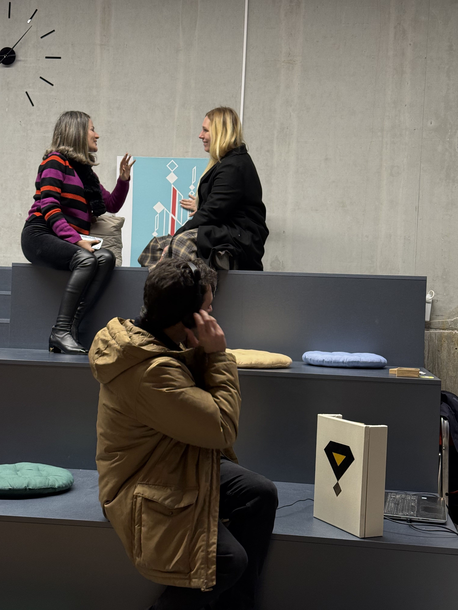

Sounding Canvas at Berlin Science Week 2026: Two Portals Across a Relational Medium

On November 3, 2026, Perceptrum² took part in INNER HORIZONS: Mapping the Psyche in Immersive 3D during Berlin Science Week 2026. Presented within the framework of the collective Hidden Variable, the evening brought together three artistic practices, Perceptrum² (Dora Motèque and Luciano Ciamarone), Alexandra Vasilyeva (avasciart), and Ala Leresteux, to explore embodiment, reflection, and perception across tangible and immersive mediums.
Two Canvases, One Space-Time-Like Medium
While this installation was not our first presentation of two connected Sounding Canvases, it marked a decisive architectural milestone: the first live public deployment of the third version of the Sounding Canvas Event Manager, built directly upon the Variational Framework.
In this configuration, a portable Sounding Canvas on site in Berlin and the studio version of Echo of Lines operated as two symmetric nodes within a single network. Rather than functioning as an interface sending commands to a remote receiver, the two paintings acted as two portals, windows opening onto a shared, space-time-like medium. When a visitor touched the surface in Berlin, that touch event propagated through the modeled medium to reach Echo of Lines, while activity at the studio canvas informed the sonic response in the exhibition space in return.
Coherence Across Scales
Beside the studio version of Echo of Lines, an accompanying poster articulated the foundational principles guiding both our artistic practice and our software architecture, showing how the same relational logic governs every layer of the work:
- Artistic Philosophy: Reality is fundamentally relational. Everything else follows, art, music, and embodiment.
- Software Architecture: Machine learning and interaction are structured as relational processes rather than isolated routines.
- Networked Paintings: Distributed exhibitions do not merely illustrate emergence; they instantiate it.
- Event Manager: The Event Manager does not merely control a relational artwork; it is itself organized relationally.
- Ideas About Consciousness: Our view of intelligence does not merely explain the system; it follows the exact same organizational logic.
Dialogue With Visitors and Shared Presence
Alongside Ala Leresteux’s immersive VR and analog works and Alexandra Vasilyeva’s contributions, visitors engaged deeply with the tactile immediacy of the Sounding Canvas. Approaching the painted surface through touch and listening, participants experienced how physical materiality and computational modeling can form a single relational system across distance.
"The distributed paintings don't merely illustrate emergence, they instantiate it and the Event Manager doesn't merely control a relational artwork, it is itself organized relationally."